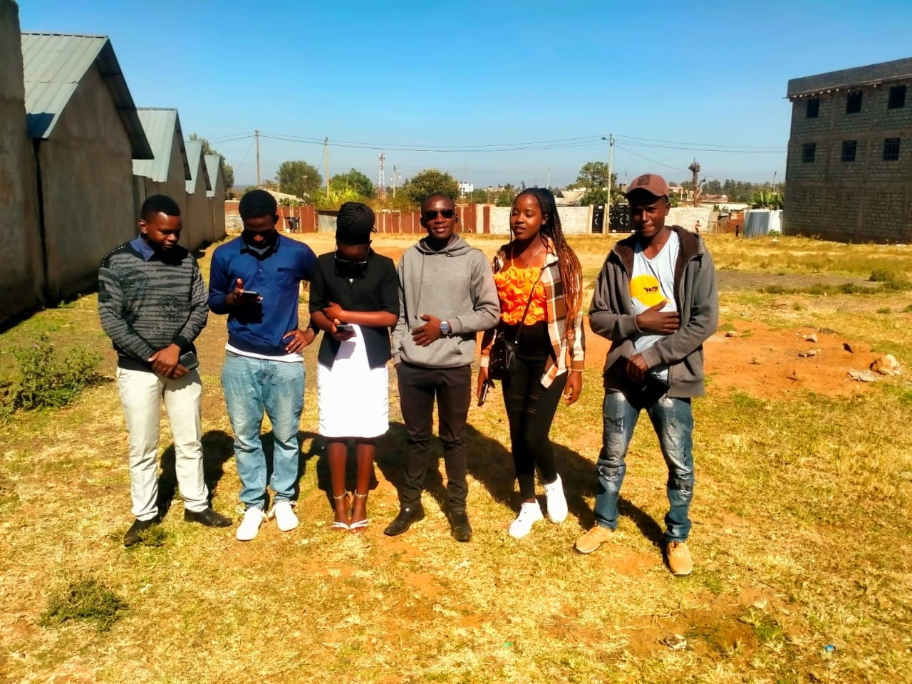
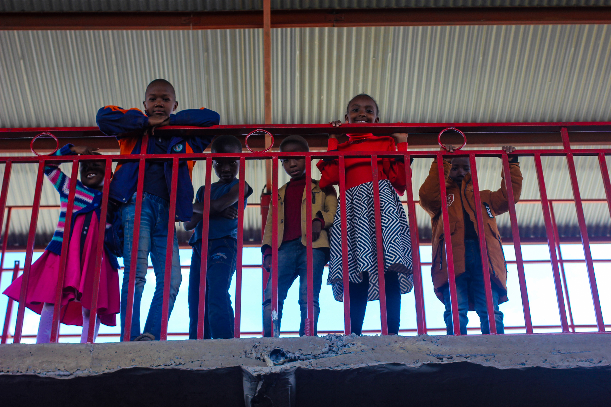
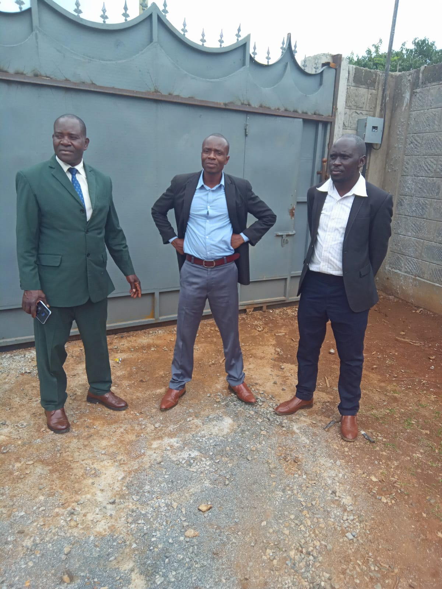
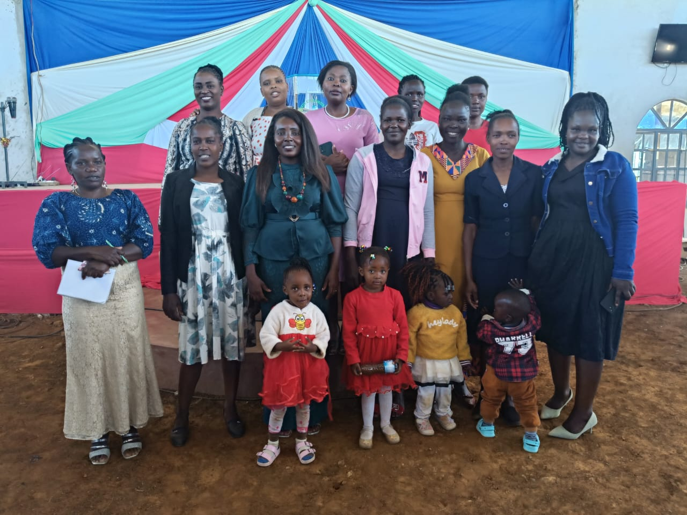

Youth Ministry
Our Youth Ministry empowers the next generation to live boldly in faith. Weekly sessions include Bible study, worship, mentorship, and outreach projects designed to help young people navigate life with godly principles.
- check_circle Weekly youth gatherings
- check_circle Mentorship programs
- check_circle Community outreach
- check_circle Leadership development

Sunday School
Our Sunday School Ministry nurtures children in God's Word, creating a foundation of faith and understanding from a young age. We provide a safe, fun environment where kids learn biblical truths through age-appropriate lessons and activities.
- check_circle Age-appropriate curriculum
- check_circle Creative worship sessions
- check_circle Caring, trained teachers
- check_circle Special holiday programs

Men's Ministry
The Men's Ministry empowers men to grow spiritually, lead in their families, and serve the community with integrity and purpose. We provide a space for men to connect, share, and grow together in their faith journey.
- check_circle Weekly fellowship meetings
- check_circle Leadership training
- check_circle Men's retreats
- check_circle Community service projects

Women's Ministry
Our Women's Ministry provides fellowship, mentorship, and spiritual growth opportunities, helping women to thrive in faith and daily life. We create a supportive environment where women can share, learn, and grow together.
- check_circle Bible study groups
- check_circle Mentorship programs
- check_circle Special events and retreats
- check_circle Prayer partnerships

Worship Team
The Worship Team leads the congregation in heartfelt praise and worship, using music and creativity to draw people closer to God. We welcome musicians, vocalists, and technical team members who have a heart for worship.
- check_circle Vocalists and musicians
- check_circle Sound and media team
- check_circle Training and development
- check_circle Special worship events